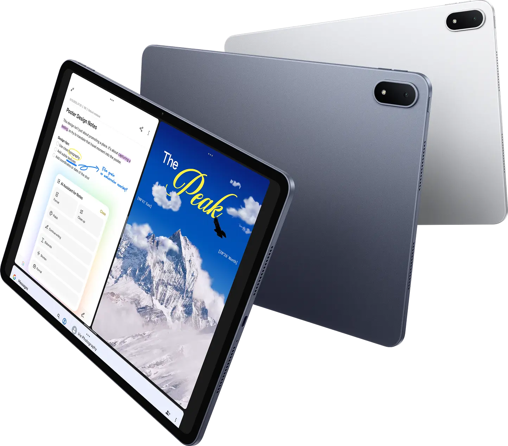
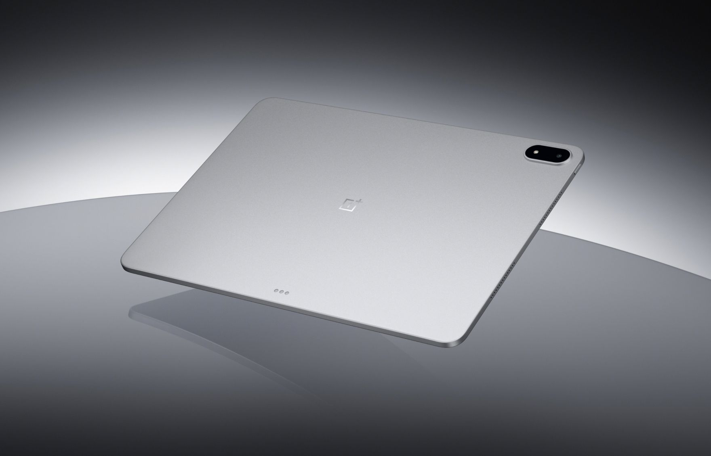
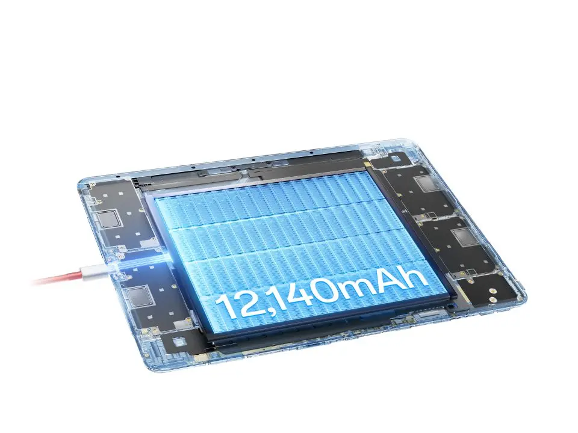
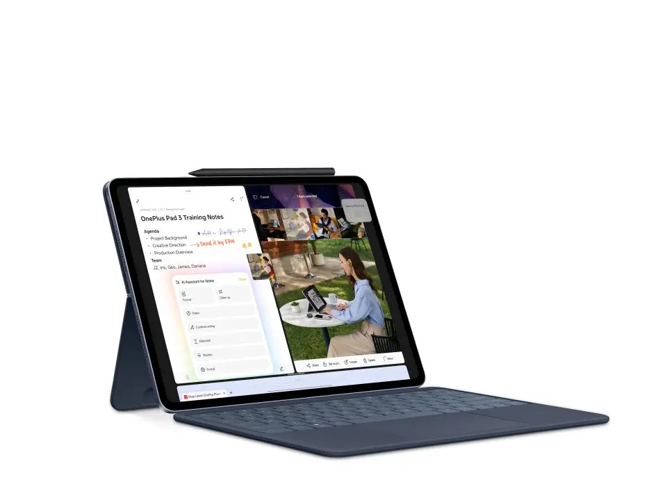

OnePlus Pad 3 Review (2025) - Researcher Review
OnePlus Pad 3 Review: Is This the Best Budget Productivity Tablet in 2025?
I bought the OnePlus Pad 3 (12GB RAM version) for 25,000 EGP (530$) because I needed a second device for work. Not a laptop replacement — just something I could use for SSH connections, coding in VS Code, taking notes, and managing projects without constantly reaching for my main machine.
I also wanted to separate my work life from everything else. A device I could leave on standby for days without worrying about battery. Something lightweight I could grab for reading or blogging after work hours. And honestly, I wasn’t about to sell my kidney for an iPad or spend Samsung flagship money.
The OnePlus Pad 3 packs the world’s fastest mobile CPU — the Snapdragon 8 Elite, 12GB RAM, a massive 12,140mAh battery, and a stunning 13.2-inch 3.4K 144Hz display in a 5.97mm ultra-slim metal body. On paper, it’s competitive with much more expensive tablets. But does it actually work for real productivity? That’s what this review is about.

What’s in the Box? (Spoiler: Not Much)
Opening the OnePlus Pad 3 box, you get the tablet and a USB cable. That’s it.
No charger. No stylus. No keyboard. Just the device and a cable.
If you want to actually charge it at the blazing 80W SUPERVOOC speeds this tablet supports, you’ll need to buy OnePlus’s charger separately for around 1,500 EGP. The Stylo 2 stylus costs about 5,000 EGP, and the official Smart Keyboard runs between 6,000 to 10,000 EGP depending on where you buy it.
So while the tablet itself is 25,000 EGP (530$), the full setup can easily push you to 37,500-41,500 EGP.
Keep that in mind when comparing prices to other tablets.
Build Quality, Weight & Thermal Performance
The OnePlus Pad 3 is impossibly thin at just 5.97mm. It’s an all-metal unibody design that feels premium and solid. You can hold it with one hand for a while without your arm getting tired. Despite the massive 13.2-inch screen, it doesn’t feel like you’re carrying around a brick.
Build quality is excellent. The Storm Blue color looks sophisticated, and the materials feel genuinely premium, not plasticky at all.
One thing that really surprised me: the temperature. This tablet doesn’t get hot. Even when I’m running multiple apps, doing SSH work, or watching videos for hours, it stays cool. OnePlus engineered a vapor chamber cooling system with 34,857mm² of heat dissipation area — that’s 14% better than the OnePlus Pad 2. I’ve used other devices that turn into hand warmers after 30 minutes. This one? No issues at all.
Battery life is exceptional. With a 12,140mAh battery (the highest capacity in its class), I can leave it on standby for days and it barely drains. OnePlus claims up to 18 hours of video playback and up to 6 hours of AAA gaming. In real-world use for work — coding, browsing, note-taking — I’m easily getting through a full day. This is exactly what I wanted: a device I don’t have to babysit with a charger.

Display: 13.2-inch 3.4K 144Hz for Coding & Productivity
The 13.2-inch screen is phenomenal for productivity work. The 3.4K resolution (315 PPI) with 12-bit color depth delivers razor-sharp text and incredibly lifelike colors. The 144Hz refresh rate makes everything feel buttery smooth — scrolling through code, switching between apps, or just browsing feels incredibly responsive.
For reading and coding, the text is crystal clear. I spend a lot of time in VS Code and Obsidian, and I haven’t had any eye strain issues. The screen size gives you enough room to actually work without feeling cramped. You can comfortably run multiple apps side by side.
The display supports Dolby Vision HDR and covers the DCI-P3 color gamut. Colors look natural and accurate. Not overly saturated or washed out. Videos and images look stunning.
Peak brightness hits 900 nits, which means indoor visibility is excellent. The brightness gets high enough for well-lit rooms without any problems. I haven’t tested it extensively outdoors in direct sunlight, but it should handle most conditions.
Battery Life: 18 Hours Video, All-Day Work
The 12,140mAh battery on this tablet is outstanding. It’s one of the best things about it.
I can leave it on standby for days without worrying. When I pick it up after not using it for a while, the battery is basically where I left it. This is perfect for my use case — I wanted a device I could grab whenever I need it without constantly checking if it needs charging.
For active use, it easily lasts a full work day. SSH sessions, VS Code, browsing, note-taking, watching videos — I’m getting through 8-10 hours of real work without needing to plug in. OnePlus claims up to 18 hours of video playback, and I believe it.
Charging is fast with the 80W SUPERVOOC charger (sold separately, unfortunately). It charges quickly enough that you can top up during a break and be good for hours.

Speakers & Microphone: 8-Speaker Setup
The audio system on the OnePlus Pad 3 is seriously impressive. It has 8 speakers — four bass units and four tweeters. The sound is clear, loud, and has actual depth. You get proper stereo separation and bass response that most tablets can’t match.
Watching videos or listening to music is genuinely enjoyable without headphones. The speakers get loud enough to fill a room without distorting.
The microphone quality is solid too. I’ve used it for calls and meetings, and people on the other end can hear me clearly. No complaints there.
One small thing I really appreciate: the alarm sound isn’t annoying. It actually wakes you up without making you want to throw the device across the room. Small detail, but it matters.
Camera: Good Enough for Video Calls
The camera is surprisingly nice. It’s sharp and takes clear photos. I wasn’t expecting much from a tablet camera, but this one actually delivers decent quality.
Realistically though, how often do you use a tablet camera? For video calls and scanning documents, it works perfectly fine. For taking actual photos, you’re probably better off using your phone just because it’s more convenient to carry around.
But if you do need to take a photo with the tablet, you won’t be disappointed. The quality is there.
Performance: Snapdragon 8 Elite Dominates
The OnePlus Pad 3 is ridiculously fast. The Snapdragon 8 Elite is the world’s fastest mobile CPU, and it shows. This chip delivers 45% faster CPU performance, 40% faster GPU performance, and 300% faster NPU performance compared to the Snapdragon 8 Gen 3. The AnTuTu benchmark score hits 2,947,633.
Opening apps is instant. Switching between multiple apps is seamless. Running VS Code over SSH, having Obsidian open with large notes, browsing with multiple tabs, playing videos in the background — it all just works without any lag whatsoever.
The response time is excellent. No stuttering, no waiting around for things to load. It feels snappy in a way that makes you forget you’re using a mid-range priced tablet.
Performance-wise, this thing competes with and often beats Apple’s M2 chip, getting close to M3 territory. And here’s the crazy part: it’s significantly cheaper than the Samsung Galaxy Tab S10 FE+, but outperforms it in nearly every aspect.
For gaming, the upgraded Adreno GPU with advanced cooling keeps frame rates high and consistent even during extended sessions. I don’t game much, but the performance headroom is there.
For the price, the performance you get is honestly insane.
OnePlus OS: The Weakest Link
This is where things get rough. The software is the weakest part of this tablet by far.
The UI feels unpolished. It’s similar to Realme’s interface, and honestly, it’s not great. OnePlus clearly didn’t put much effort into the software side. The built-in Notes app, for example, looks like something someone threw together in ChatGPT in 10 minutes. It’s that basic.
The system update experience was absolutely terrible. It’s the worst update process I’ve ever dealt with on a new device. Frustrating, slow, and poorly designed. This alone almost made me regret the purchase.
On the positive side: the Music app doesn’t have ads. That might sound like a low bar, but after dealing with Realme’s music app that forced you to watch ads just to play local music files, this is actually refreshing. The fan fact: it doesn’t has an Music app it uses YouTube music ^ ^
The software works, but it feels like OnePlus shipped this tablet with placeholder apps and never bothered to finish them. For a device with this kind of hardware, the software experience is disappointing.
Oxygen OS 16
The new version os 16 gets a lot of updates, the UI is more better, the animations and the apps gets a lot of updates, especially the notebook app it’s more better and works smoothly with the notebook they added a lot of updates like:
- Enhance writing with AI : Create high-quality notes with Polish, Format, and more tools.
Block-based editing
Swipe right to adjust the format for a block of content.
Hold and drag to move text around.
“/” for quick edits
Tap “/” to change paragraph format, insert images or tables, and use other quick features.
Highlight key information
Double-tap to select words and tap “Highlight” to add a highlight.
Share link
Export notes as PDF, TXT, or image files, or share them via link so anyone can read them, view embedded images, and listen to attached recordings on any device. **** Does they worked ? Yes, but the the share link and edit AI are not working due to errors in their servers for now, I also which the / quick edit can be smarter and has auto completions .
It will be more smart to has native support for MD writing and when I type ## it should make it heading by default but it doesnt. ## OnePlus AI Features: Actually Useful
OnePlus has packed some genuinely useful AI features into this tablet, and they’re actually practical for daily work.
AI Notes is probably the most useful one for me. One tap gives you instant summaries of long notes, or it can transcribe voice recordings without all the “umms” and “ahhs.” You can also clean up text, format it, continue writing, or adjust the tone between formal and casual. This is helpful when I’m taking quick notes and need to turn them into something more polished.
AI Voice Recorder works really well. It transcribes accurately and removes filler words automatically. Great for meetings or capturing ideas quickly.
It’s lags for the first words and when you speak fast it’s not there yet this is for Arabic
AI Search (previously called Intelligent Search) is smart about finding things across your device. You can ask naturally like “How much do I need to pay for video production?” and it searches through your files, notes, and settings. It understands context, which makes finding stuff much faster than traditional search.
AI Translation is solid. It works on text, images, live conversations, and even screen content in real-time. If you deal with multiple languages or watch foreign content, this is genuinely useful.
AI Summary gives you instant summaries of articles and websites with one tap. AI Writer helps polish your writing and change tone. AI Speak reads on-screen content aloud for multitasking.
The tablet also features Google Gemini built-in. You can access it via the dedicated AI button on the keyboard or by long-pressing the navigation bar. It’s helpful for brainstorming, writing, planning, and learning.
The AI photo features (Perfect Shot, Unblur, Reflection Eraser, AI Eraser) are nice to have but I don’t use them much since I’m not focused on photography.
Overall, the AI features are actually practical tools, not just marketing gimmicks. The Notes and Voice Recorder AI especially help with my workflow. AI Transcriptions :it’s an automatic captions for vidoes in specific languages I use it for generate captions in English it’s very cool! The most loved one for me :)
Keyboard & Stylus: Pro-Grade Accessories
I tested the tablet with a Redragon Bluetooth keyboard, and it works better than I expected. No noticeable latency at all. Typing feels responsive and smooth.
The problem is that using a separate Bluetooth keyboard without a proper setup gets annoying. You need to keep the tablet at the right distance, make sure it’s standing correctly, and you’re stuck without a mouse nearby. It works, but it’s not comfortable for long sessions.
OnePlus Smart Keyboard (6,000-10,000 EGP) The official keyboard has a 6-row layout with a dedicated function row. It’s detachable with Bluetooth connectivity (works up to 10 meters wirelessly), and features NFC tap for One-touch Transmission to quickly share files. That’s expensive — especially when you consider the tablet itself is 25,000 EGP.
I bought it after one week of buying the tablet itself. The first impression that It’s name was one plus pad 2 pro in Chinese and after that I thought it’s was a mistake from the buyer..then I found it’s another name for the same OnePlus pad 3 . The most important it’s keys are better than normal laptop and it’s totally different from mechanical one and i found it better than the redregon it’s wide and very good. The smell of the leather cover is nice and feels premium!
The touchpad is normal not that good but it’s okay. The shortcuts are very nice also …you will start that this more to be a productivity machine : don’t forget to mute all the notifications OnePlus Stylo 2 (5,000 EGP) The stylus offers 16,000 levels of pressure sensitivity, ultra-low latency, and haptic feedback. It also doubles as a laser pointer with page turn functions for presentations.
I’m probably going to end up buying the official keyboard anyway. I’m curious about the layout and how the switches compare to the mechanical keyboards I’m used to. I don’t know if I’ll love it, but I need something more integrated for serious work.
The typing experience matters when you’re coding or writing for hours, so having a proper keyboard setup is worth the investment.

My Workflow: How I Use It as a Programmer
This is why I bought the tablet in the first place — to create a separate workspace that doesn’t mix with my personal life.
I wanted a device I could pick up for specific work tasks without reaching for my main laptop every time. Something I could leave on standby for days and grab whenever I need it. The OnePlus Pad 3 does exactly that.
Here’s how I use it:
Coding & Development - VS Code for SSH connections to my servers and remote development - I can work on projects without being tied to my main machine - The large 13.2-inch screen lets me see more code at once
Note-Taking & Knowledge Management - Obsidian for my personal knowledge base and daily notes - OneNote for quick captures and shared notes - The AI Notes feature helps clean up and format my thoughts quickly
Productivity & Task Management - Super Productivity for tracking my daily tasks and time - Linear for project management - Ankicards for learning and spaced repetition - Zotero for research and reference management
File Sync & Transfer - Syncthing keeps my files synced across devices - LocalSend for quick file transfers between my laptop and tablet
Content Creation - YouTube Studio and TikTok Studio for uploading shorts and managing content properly - Substack for writing and publishing - Infinite Painter for occasional creative work
Browsing - Brave as my main browser
Media Consumption - Reading articles and documentation offline - Watching videos — the 3.4K screen and 8-speaker system make this incredible
Seamless Connectivity The OnePlus Pad 3 connects seamlessly with my OnePlus phone. I can use my phone’s 5G without setting up a hotspot, sync notifications and clipboard, and use App Relay to continue tasks between devices. It also supports remote connection to Mac via the O+ Connect app for drag-and-drop file transfers and native Mac gestures.
The separation is the key benefit. I can work on an open project daily through these apps, then close the tablet and leave work behind. It’s a mental boundary that helps me stay focused during work hours and actually relax after.
The Downsides: What OnePlus Got Wrong
No device is perfect, and the OnePlus Pad 3 has some real frustrations.
No SIM Support This is probably my biggest disappointment. The tablet doesn’t support a SIM card at all. If you need cellular connectivity on the go, you’re out of luck. You’re stuck with WiFi only or tethering to your phone (though the OnePlus phone integration makes this easier).
No Charger in the Box You get a USB cable and that’s it. Want to actually charge the device at the advertised 80W SUPERVOOC speeds? Pay another 1,500 EGP for the official charger. It feels cheap to leave this out of a 25,000 EGP device.
Software Needs Serious Polish The UI is rough. Built-in apps feel half-finished. The Notes app is embarrassingly basic. OnePlus clearly focused on hardware and ignored the software experience.
System Updates Are Terrible This was the worst part of setting up the device. The update process is painfully slow, poorly designed, and frustrating. It’s the kind of experience that makes you question your purchase decision.
Expensive Accessories The Stylo 2 costs 5,000 EGP. The Smart Keyboard is 6,000-10,000 EGP. The charger is 1,500 EGP. By the time you have a complete setup, you’re approaching iPad pricing territory — but at least you’re getting better specs.
OnePlus Pad 3 Total Cost Breakdown (EGP)
Here’s what you’re actually paying when you buy the OnePlus Pad 3 with all the accessories you’ll realistically need:
| Item | Price (EGP) |
|---|---|
| OnePlus Pad 3 (12GB RAM) | 25,000 |
| OnePlus Stylo 2 | 5,000 |
| OnePlus Smart Keyboard | 6,000 - 10,000 |
| 80W SUPERVOOC Charger | 1,500 |
| Total | 37,500 - 41,500 |
So while the tablet itself looks affordable at 25,000 EGP, the full setup pushes you into the 37,500-41,500 EGP range.
For context: that’s approaching the total cost of a basic iPad setup. The difference? You’re getting significantly better specs with the OnePlus — the world’s fastest mobile CPU, a larger and sharper 3.4K display, double the battery capacity, and 8 speakers.
Here’s the really funny part: the iPad Magic Keyboard alone costs about the same as the entire OnePlus Pad 3 tablet. You’re paying iPad Magic Keyboard prices for a whole tablet that outperforms the iPad it would plug into. Let that sink in.
OnePlus Pad 3 vs iPad vs Samsung: Which Wins?
Let’s talk about what you’re getting compared to the competition, because the numbers are honestly wild.
vs iPad (Base Model) The base iPad with similar accessories ends up costing roughly the same as a fully kitted OnePlus Pad 3. But the OnePlus has objectively better specs: - Snapdragon 8 Elite beats Apple’s M2 chip in many benchmarks - 13.2-inch 3.4K display vs 10.9-inch 2360x1640 on iPad - 144Hz vs 60Hz refresh rate - 12,140mAh vs ~7,600mAh battery - 8 speakers vs 2 speakers - 80W charging vs 20W charging
And here’s the absurdity: Apple’s Magic Keyboard costs around 25,000 EGP on its own. That’s the same price as the entire OnePlus Pad 3. You’re paying for a keyboard what OnePlus charges for a whole flagship tablet. The value proposition is insane.
vs Samsung Galaxy Tab S10 FE+ The Samsung costs more than the OnePlus Pad 3, but the OnePlus beats it in nearly every aspect. Better processor (Snapdragon 8 Elite vs Exynos 1480), larger battery, faster charging, bigger display, and better value. The Samsung might have slightly more polished software, but you’re paying a premium for the brand name.
The Real Winner For 25,000 EGP, you’re getting performance that beats Apple’s M2 and approaches M3 territory. You’re getting flagship specs at mid-range pricing. The only real compromise is the software experience, which is rough but workable.
If you can live with OnePlus OS and don’t need cellular connectivity, this tablet offers unbeatable value in 2025.
Who Should Buy the OnePlus Pad 3?
You should buy the OnePlus Pad 3 if:
✅ You’re a programmer or developer who needs a secondary device for SSH, coding, and productivity work
✅ You want to separate work from your main laptop without spending iPad money
✅ You’re a content creator on a budget who needs something for YouTube Studio, TikTok, or blogging
✅ You’re a student who needs a powerful tablet for note-taking, research, and media consumption
✅ You want flagship performance without paying flagship prices
✅ You primarily use WiFi and don’t need cellular connectivity (though OnePlus phone integration helps)
✅ You can tolerate rough software in exchange for excellent hardware
✅ You want the best display and audio experience on an Android tablet
Don’t buy this if:
❌ You need SIM/cellular support — this tablet doesn’t have it
❌ You’re deeply invested in the Apple ecosystem and need seamless integration
❌ You expect premium accessories to be included — they cost extra
❌ You can’t deal with frustrating system updates
❌ You need polished, refined software out of the box
Final Verdict: 9/10
The OnePlus Pad 3 is a fantastic tablet trapped in mediocre software.
The hardware is exceptional. The Snapdragon 8 Elite performance is incredible. The 13.2-inch 3.4K 144Hz display is stunning. The 12,140mAh battery life is outstanding. The 8-speaker audio system is phenomenal. The 5.97mm ultra-slim metal design is gorgeous. For 25,000 EGP, you’re getting specs that compete with devices costing twice as much.
But the software experience is frustrating. The system updates are terrible. The built-in apps feel unfinished. OnePlus clearly put all their effort into hardware and phoned it in on software.
Here’s the thing though: if you’re like me and you’re installing your own apps anyway — VS Code, Obsidian, Super Productivity, Brave — the stock software doesn’t matter as much. You’re building your own environment. The hardware gives you an exceptional foundation to work with.
Would I buy it again? Yes. Despite the software frustrations and the lack of SIM support, this tablet does exactly what I needed: a fast, lightweight, long-lasting secondary device for work that didn’t cost iPad money. The Snapdragon 8 Elite performance, massive battery, and beautiful display make it worth every compromise.
The OnePlus Pad 3 isn’t perfect, but it’s the best value Android tablet for productivity work in 2025. Just budget for the accessories and prepare yourself for a rough software experience.
Rating: 9/10 — Exceptional hardware held back by rough software, but still the best value in its class.